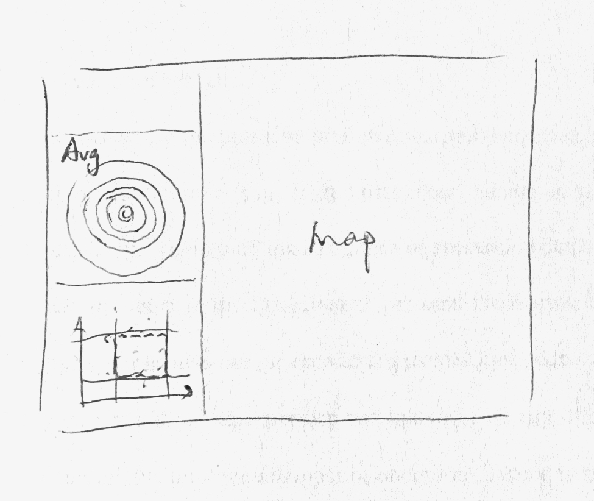
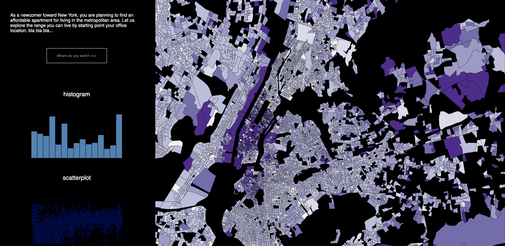
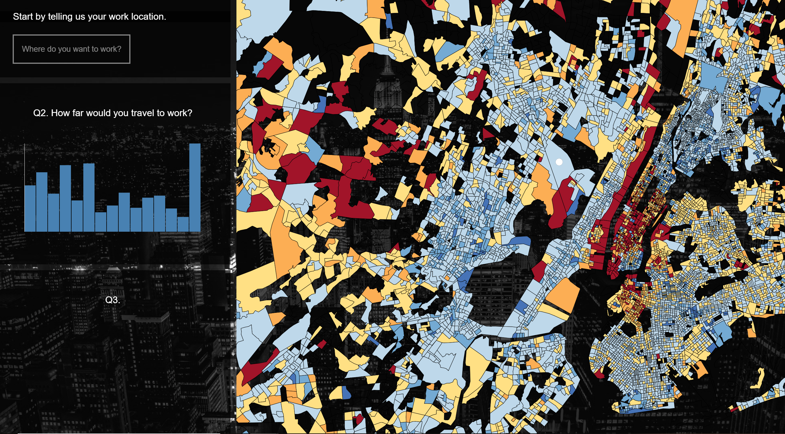
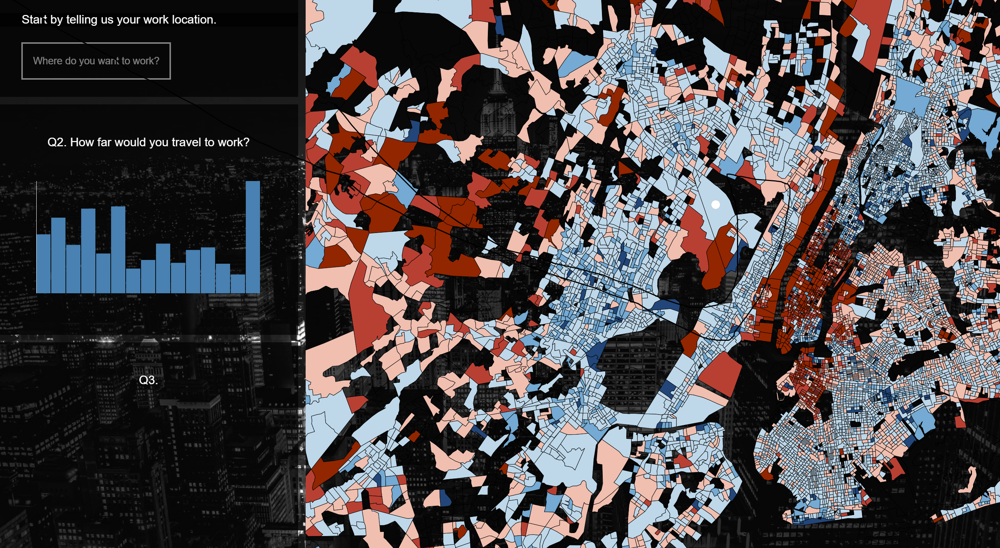
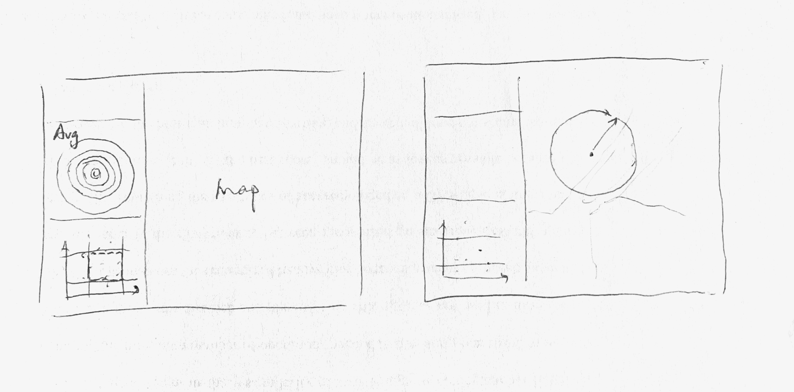

Assignment 3 Write-up: Your NYC Base Mapper
Group Name - dandanmian
Group Members -
Shaoying Tan(tansyl), Tuo Sun(sunt), Yao Zhao(yaozhao)
Datasets: The U.S. Census Bureau Demographic and Cartographic Database
This is an open database released by the U.S. Census Bureau, including demographic and cartographic across America. We are interested in using this database to relate demographic and cartographic data, and provides interactive, personalized data visualization for the user. Particularly, we are using the datasets of New York City and adjacent areas.
The data is available online at: Median Gross Rent Dataset;
Cartographic Dataset(block groups).
Overview
How do you locate a neighborhood you can afford to live in, as a newcomer in the city?
This project aims to assist the user to obtain a general idea of potentially affordable neighborhoods for living from a bird-view perspective.
Design Process and Decisions
1. Concept Map of the Mapper

This is a diagram describing the concept of this data visualization. The user starts by placing a mark of there work spot (or potential work spot) on the map, and the bar chart will display the average rent by distance from the user's work spot, and the scattered dot graph will display the block groups according to their median rent and distance. After obtaining a rough idea of rent level around his working area, the user can further specify the range of rent and the range of distance acceptable in the scattered plot, then the selected block groups will be highlighted on the map.
2. Design Decisions
2.1 Visualization Format
We decide to make a map with interactive filters for this visualization. In the discussion of the filter interface, we explored different ideas and finalized on a bar chart and a scatter plot. There are innovative thoughts such as replacing the conventional bar chart with a radiant variation(like in the sketch below), but we want to keep it simple because these filters are not the major focus for the user but rather functional elements, and it is better to maintain low design affordance.

2.1 Color Coding
Different color schemes were explored in this project for an optimal visualization outcome.

We started by monocolor tone and use different gradients to show different price ranges. The visual distinction is not as good as expected even after trying several color and different intervals, so we would like to try other types of color schemes.

We tested with a modified color scheme from
this reference that involves more colors. It worked better in enhancing rough division of areas (blue shades are lower-priced areas and red/orange shades are expensive neighborhoods), but still not ideal.


For the final version, we rolled back from the reference's color scheme, extracting the bi-polar idea for high rent v.s. low rent, and created this red-blue color contrast. The marker of location will be in yellow so that it stands out from the base map. The final design of the marker is a white dot with light yellow halo.
2.3 Interactive Elements

This is anzzzzzzzzzzzzzzzzzzzzzzzzzzzzzzzzzzzzzzzzzzzzzzzzzzzzzzzzzzzzzzzzzzzzzzzzzzzzzzzzzzzzzzzzzzzzzzzzzzzzzzzzzzzzzzzzzzzzzzzzzzzzzzzzzzzzzzzzzzzzzzzzzzzzzzzzzzzzzzzzzzzzzzzzzzzzzzzzzzzzzzzzzzzzzzzzzzzzzzzzzzzzzzzzzzzzzzzzzzzzzzzzzzzzzzzzzzzzzzzzzzzzzzzzzzzzzzzzzzzzzzzzzzzzzzzzzzzzzzzzzzzzzzzzzzzzzzzzzzzzzzzzzzzzzzzzzzzzzzzzzzzzzzzzzzzzzzzzzzzzzto assist the user to roughly locate a potential neiborhood for living from a bird-view perspective.
3. Technical Difficulties
In short,This is anzzzzzzzzzzzzzzzzzzzzzzzzzzzzzzzzzzzzzzzzzzzzzzzzzzzzzzzzzzzzzzzzzzzzzzzzzzzzzzzzzzzzzzzzzzzzzzzzzzzzzzzzzzzzzzzzzzzzzzzzzzzzzzzzzzzzzzzzzzzzzzzzzzzzzzzzzzzzzzzzzzzzzzzzzzzzzzzzzzzzzzzzzzzzzzzzzzzzzzzzzzzzzzzzzzzzzzzzzzzzzzzzzzzzzzzzzzzzzzzzzzzzzzzzzzzzzzzzzzzzzzzzzzzzzzzzzzzzzzzzzzzzzzzzzzzzzzzzzzzzzzzzzzzzzzzzzzzzzzzzzzzzzzzzzzzzzzzzzzzzzto assist the user to roughly locate a potential neiborhood for living from a bird-view perspective.
4. Work Distribution and Notes on Development Process
Concept development: all members.
Data collecting and parsing: Yao Zhao
Data Mapping: Tuo Sun
D3 interaction: Tuo Sun, Yao Zhao
Visualization design and compiling: Shaoying Tan
Presentations and write-up: Shaoying Tan
Data collecting and parsing took about 5 hours and primary data mapping (including how elements interact with the map in D3) took about 12 hours. Visualization design, compiling and the deliverable package took about 15 hours. Building the interaction part took the longest time, it is about 45 people-hours.
(None of us have D3 development experience prior to this class.)